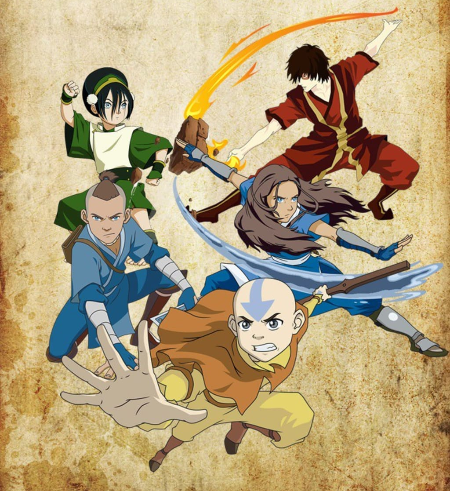

About Aang
The long lost avatar with the ability to master all four elements who was frozen in ice for 100 years as the fire nation conquered the other nations.
Aang and the gang.
Aang facts
- He is the last of the air nomads.
- He is 112 years old.
- He has the ultimate responsibility of ending the war with the fire nation.
- He has a crush on Katara.
Aang's gang
Friends he made along his journey of learning the other elements. Click on the links below to read more about them.